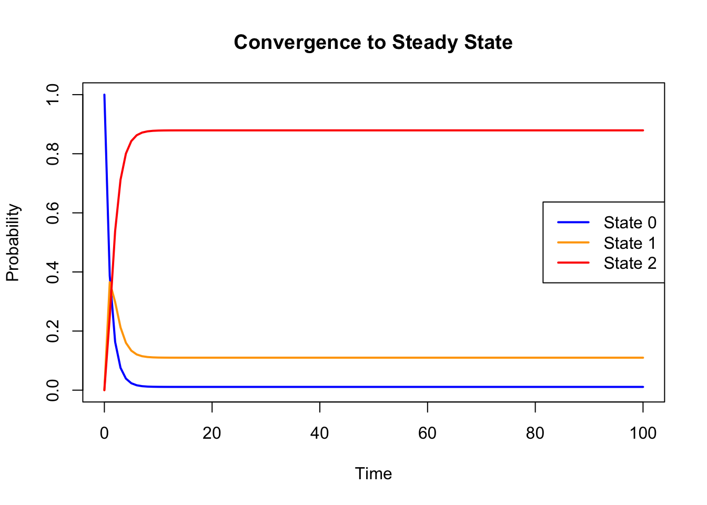
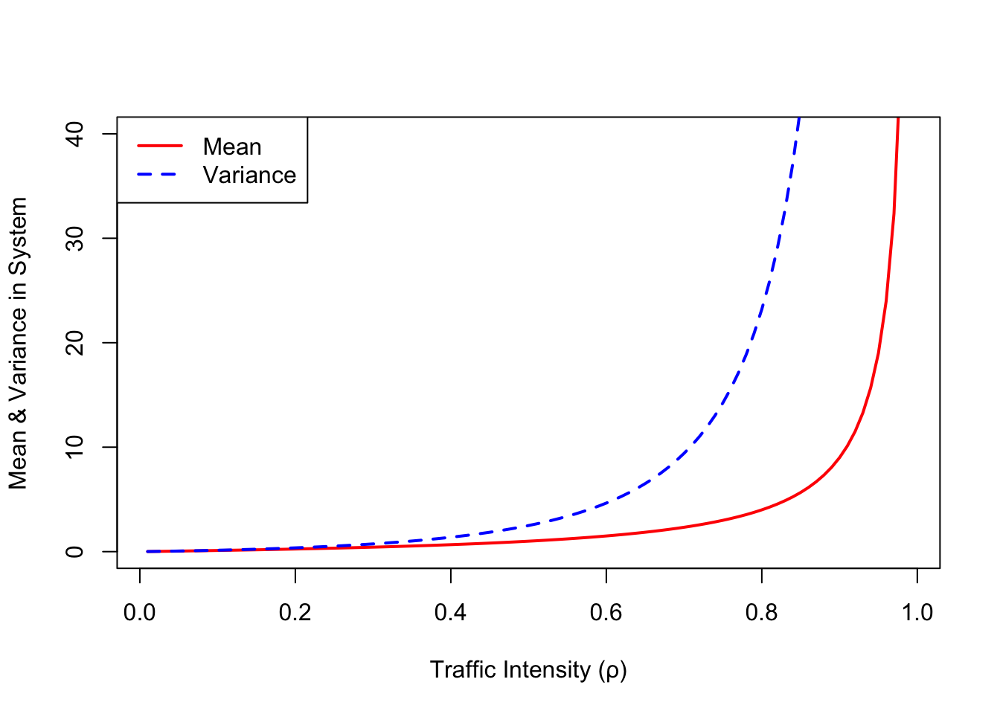

Q <- matrix(c(
-1.0, 1.0, 0.0,
1/10, -1.1, 1.0,
0.0, 1/8, -1/8
), nrow = 3, byrow = TRUE)
Q [,1] [,2] [,3]
[1,] -1.0 1.000 0.000
[2,] 0.1 -1.100 1.000
[3,] 0.0 0.125 -0.125In this short lab, we’ll explore how Continuous-Time Markov Chains (CTMCs) and Queueing Theory apply to healthcare settings using realistic examples. The goal is to build intuition and hands-on familiarity through code you can run and interpret.
We’ll use the example of a vaccine clinic with limited observation space, followed by a queueing system involving patients waiting for service.
In a rural health facility, adults are being vaccinated against rubella. After receiving their shots, each patient must be observed for side effects in a dedicated room. Due to space limits, only two patients can be monitored at a time. Initially, patients arrive approximately once every minute. If there is space, they are admitted; otherwise, they are turned away. When alone in the room, each person is monitored for 10 minutes. If two are observed together, both are monitored for 8 minutes due to resource constraints.
Can you build a model of the possible occupancy changes in this small clinic? Think about transitions between 0, 1, or 2 patients and how often they happen.
Q <- matrix(c(
-1.0, 1.0, 0.0,
1/10, -1.1, 1.0,
0.0, 1/8, -1/8
), nrow = 3, byrow = TRUE)
Q [,1] [,2] [,3]
[1,] -1.0 1.000 0.000
[2,] 0.1 -1.100 1.000
[3,] 0.0 0.125 -0.125Over a long day, how much time does the clinic spend in each state — 0, 1, or 2 patients in the observation room?
library(Matrix)
steady_state <- function(Q) {
A <- t(Q)
A[nrow(A), ] <- rep(1, ncol(Q)) # normalisation
b <- c(0, 0, 1)
solve(A, b)
}
pi <- steady_state(Q)
names(pi) <- paste0("State ", 0:2)
pi State 0 State 1 State 2
0.01098901 0.10989011 0.87912088 Let’s visualize the convergence to the steady-state distribution by tracking the probability of each state over time.
#install.packages("expm")
library(expm) # for matrix exponential
# Time points66
times <- seq(0, 100, by = 1)
# Initial state (start empty)
p0 <- c(1, 0, 0)
# Compute evolution over time
probs_over_time <- t(sapply(times, function(t) p0 %*% expm(Q * t)))
matplot(times, probs_over_time, type = "l", lty = 1, lwd = 2,
col = c("blue", "orange", "red"),
ylab = "Probability", xlab = "Time",
main = "Convergence to Steady State")
legend("right", legend = c("State 0", "State 1", "State 2"),
col = c("blue", "orange", "red"), lty = 1, lwd = 2)
Explain: How long does it take for the system to reach equilibrium? Which state dominates during the transient phase?
Answer:
Based on the convergence plot, the system reaches its equilibrium (steady-state) approximately within 15 to 20 minutes. This is evident from the point at which the probabilities for all three states stabilize and no longer change significantly over time.
During the initial transient phase, the system starts from an empty state (State 0), so the probability of being in State 0 is initially 1. As time progresses, patients begin arriving, and the probability of being in State 1 (one patient in the room) increases briefly. However, this is quickly overtaken by State 2 (two patients in the room), whose probability rises rapidly and becomes the dominant state.
Once equilibrium is reached, State 2 clearly dominates, maintaining a high steady-state probability (approximately 88%). This indicates that under the current arrival and observation rates, the clinic operates at or near full capacity for most of the time.
On average, how many people are being observed in the room at any given time? This gives a sense of how often the room is full or idle.
sum(0:2 * pi)[1] 1.868132Due to a new outreach campaign and the arrival of a donor-funded vaccine shipment, community interest in rubella vaccination has surged. As a result, patients are now arriving every 30 seconds, doubling the previous arrival rate. Observation lasts 20 minutes*when one person is present. If two patients are present, they both stay for 17 minutes.
How does this change the expected number of patients inside the room?
Q2 <- matrix(c(
-2, 2, 0.0,
1/20, -2.0588, 2,
0.0, 1/17, -1/17
), nrow = 3, byrow = TRUE)
pi2 <- steady_state(Q2)
round(pi2, 4)[1] 0.0007 0.0284 0.9709sum(0:2 * pi2) # new expected number[1] 1.970149In the same rural vaccine clinic, patients begin their visit at a check-in desk staffed by a single nurse. Patients arrive randomly, on average once every two minutes. Each check-in takes about 1.5 minutes and is handled one at a time. If the nurse is already helping someone, the remaining patients wait their turn. There is no upper limit on how many patients can wait in line.
The clinic administrator wants to know: How busy is the nurse? How long does each patient spend waiting and checking in? And how many people are typically in the system?
lambda <- 1/2 # arrivals per minute
mu <- 2/3 # service rate per minute (1/1.5)
rho <- lambda / mu
L <- rho / (1 - rho)
Lq <- rho^2 / (1 - rho)
W <- 1 / (mu * (1 - rho))
Wq <- rho / (mu * (1 - rho))
list(
Utilization = round(rho, 2),
"Avg in System (L)" = round(L, 2),
"Avg in Queue (Lq)" = round(Lq, 2),
"Time in System (W)" = round(W, 2),
"Time in Queue (Wq)" = round(Wq, 2)
)$Utilization
[1] 0.75
$`Avg in System (L)`
[1] 3
$`Avg in Queue (Lq)`
[1] 2.25
$`Time in System (W)`
[1] 6
$`Time in Queue (Wq)`
[1] 4.5Imagine the clinic gets busier over time — more patients show up without any increase in staff. Let’s see how the average number of patients and the uncertainty around that number change.
rho_vals <- seq(0.01, 0.99, by = 0.01)
L_vals <- rho_vals / (1 - rho_vals)
Var_vals <- rho_vals * (1 + rho_vals - rho_vals^2) / (1 - rho_vals)^2
plot(rho_vals, L_vals, type = "l", col = "red", lwd = 2,
ylim = c(0, 40), ylab = "Mean & Variance in System", xlab = "Traffic Intensity (ρ)")
lines(rho_vals, Var_vals, col = "blue", lwd = 2, lty = 2)
legend("topleft", legend = c("Mean", "Variance"), col = c("red", "blue"), lty = c(1, 2), lwd = 2)
Explain: What does the graph suggest about the workload and predictability of the check-in desk as it gets busier?
Answer
As traffic intensity (\(\rho\)) increases, both the mean and variance of the number of patients in the system grow rapidly. The red curve in the plot shows the average number of patients in the system, while the dashed blue curve represents the variance (i.e., how much the system fluctuates).
When the system is lightly loaded (e.g., \(\rho < 0.5\)), both mean and variance remain low. However, as \(\rho\) approaches 1 — meaning patient arrivals nearly match or exceed the nurse’s capacity to serve them — the average number of people waiting increases sharply, and the system becomes unpredictable.
This pattern suggests that if the clinic continues to get busier without adding more staff, queues will grow longer and waiting times will become highly variable, making it hard to manage patient flow effectively. Clinic managers should aim to keep traffic intensity well below 1 to ensure smooth and stable operations.